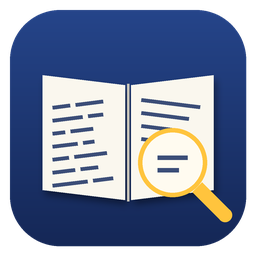
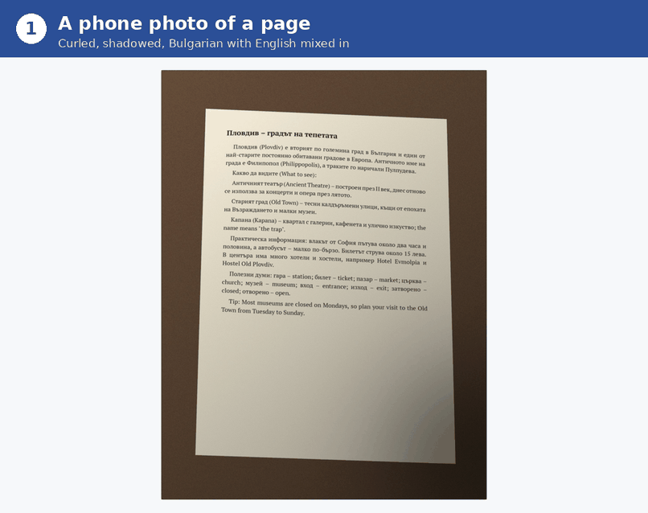
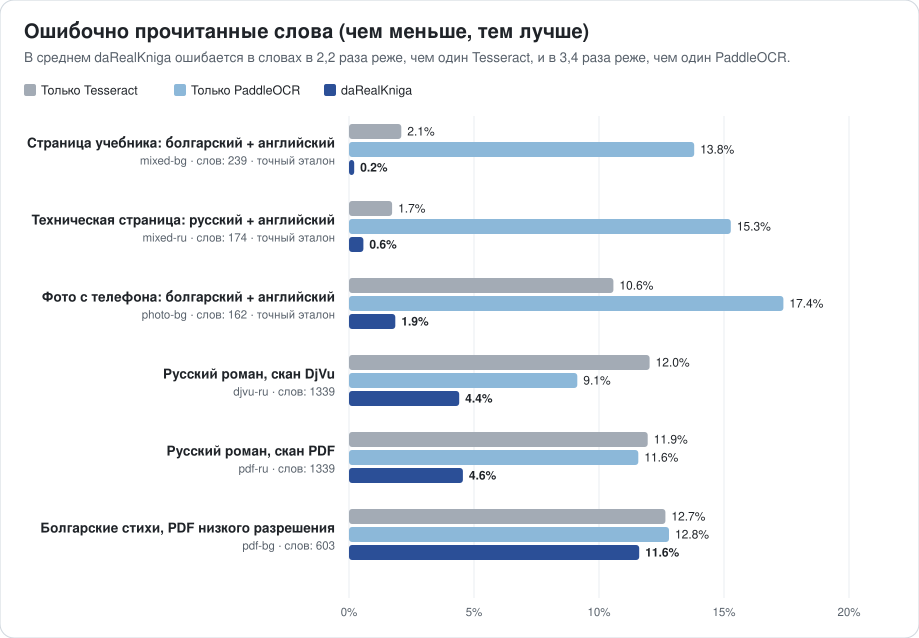

daRealKniga
Превращает старые книги, архивы и повседневные документы в точные цифровые копии, по которым можно искать. Создано для славянских языков и английского, даже вперемешку на одной странице.
«Да, настоящая книга»: с настоящим текстом, по которому можно искать.

Настоящий запуск: на входе фото с телефона, на выходе PDF с поиском, а для сравнения — обычный OCR на том же фото (интерфейс на английском; программа доступна и на русском).
Что она делает
PDF с поиском
Превращает книги в DjVu, PDF из картинок, фото и сканы в PDF, где текст можно искать, выделять и копировать. Также сохраняет простой текстовый файл, а для книг в DjVu — DjVu с поиском.
Кириллица и латиница вперемешку
В учебниках, словарях и двуязычных документах каждое слово остаётся в своём алфавите. Похожие буквы (а/a, р/p, Н/H) больше не ломают поиск.
Не только сканы, но и фото
Изогнутые, наклонённые, затенённые страницы с телефона сначала выпрямляются и очищаются, а все страницы получаются одного размера.
Ваш язык, ваш компьютер
Интерфейс доступен на 31 языке, включая все славянские. Всё работает на вашем компьютере: документы никуда не отправляются.
Для старых книг и архивов
daRealKniga создана для оцифровки целых книг и собраний так, как этого ждут библиотеки и архивы: верно оригиналу, единообразно и с поиском.
Оригинал остаётся нетронутым
В сканах DjVu изображения страниц сохраняются в точности, добавляется только невидимый текстовый слой. Рядом сохраняются PDF и текстовый файл.
Целые книги, а не отдельные страницы
Сотни страниц обрабатываются параллельно. Прерванная обработка продолжается с того же места, а диапазон страниц позволяет сначала проверить настройки на нескольких страницах.
Старая печать, разнородные сканы
Все страницы получаются одного размера, даже если сканы различаются. Проверено на болгарских и русских изданиях 1970-х годов по их существующему тексту.
Готово для каталога и конфиденциально
Название и автор сохраняются в PDF. Всё работает на вашем компьютере: собрания никуда не уходят, а форматы открытые (PDF, DjVu, простой текст).
Лучше обычного OCR
Каждый образец читается тремя способами по одним и тем же изображениям страниц: только Tesseract, только PaddleOCR и daRealKniga, которая очищает страницы, объединяет оба движка слово за словом и исправляет их ошибки.
В среднем daRealKniga ошибается в словах в 2,2 раза реже, чем один Tesseract, и в 3,4 раза реже, чем один PaddleOCR.

| Образец | Только Tesseract | Только PaddleOCR | daRealKniga |
|---|---|---|---|
| Страница учебника: болгарский + английскийсинтетический скан страницы учебника: болгарский текст с английскими словами и предложениями | 97,9% | 86,2% | 99,8% |
| Техническая страница: русский + английскийсинтетический скан страницы руководства: русский текст с английскими терминами, командами и названиями | 98,3% | 84,7% | 99,4% |
| Фото с телефона: болгарский + английскийсинтетическое фото страницы путеводителя (изогнутой, в перспективе, при неровном свете): болгарский текст с английскими названиями и фразами | 89,4% | 82,6% | 98,1% |
| Русский роман, скан DjVuрежим сканов DjVu, русская проза (Вазов, «Под игом», 1970) | 88,0% | 90,9% | 95,6% |
| Русский роман, скан PDFPDF того же издания (обрезанные плоские сканы); эталон — текстовый слой DjVu | 88,1% | 88,4% | 95,4% |
| Болгарские стихи, PDF низкого разрешенияболгарская поэзия и проза, развороты 133 dpi (Вазов, «Събрани съчинения», т. 4, 1974); в самом эталоне много ошибок OCR | 87,3% | 87,2% | 88,4% |
Точность по словам: доля слов, прочитанных абсолютно верно. Латинская буква вместо похожей кириллической считается ошибкой: такое слово уже не найти поиском.
Слова, в которых ошибается обычный OCR
| Напечатано | Только Tesseract | Только PaddleOCR | daRealKniga |
|---|---|---|---|
| а | a | – | а ✓ |
| open | ореп | ореn | open ✓ |
| монастырских | мопастырских | мопастырскнх | монастырских ✓ |
| внимание | впимание | вшнмание | внимание ✓ |
| наполняя | паполпяя | паполняя | наполняя ✓ |
| стену | степу | – | стену ✓ |
| них | пих | пих | них ✓ |
| са | ca | са ✓ | са ✓ |
| нов | HOB | нов ✓ | нов ✓ |
| от | OT | от ✓ | от ✓ |
| or | ог | or ✓ | or ✓ |
| да | na | да ✓ | да ✓ |
Выделенные буквы взяты из другого алфавита: на экране они выглядят так же, но слово перестаёт находиться поиском.
Измерено 2026-10-08: daRealKniga 0.3.0, Tesseract 5.3.4, PaddleOCR 3.7.0. Все три читают одни и те же изображения страниц одними и теми же моделями OCR.
Образцы, способ оценки и как повторить проверку самостоятельно описаны в README (на английском).
Скачать
Бесплатно и с открытым кодом (MIT). При первом запуске загружаются модели OCR: около 45 МБ и ещё 10–15 МБ на каждый язык.
Linux
Один файл, в котором есть всё. Сделайте его исполняемым и запустите двойным щелчком. Работает в 64-битных дистрибутивах примерно с 2022 года.
Скачать AppImagemacOS в разработке
Apple Silicon и Intel. Устанавливается через Homebrew и несколько команд в Терминале.
Установка на macOSWindows в разработке
64-битные Windows 10 и 11. Устанавливается несколькими командами PowerShell.
Установка на WindowsПоддержка macOS и Windows появилась недавно: если что-то не работает или инструкции непонятны, пожалуйста, напишите нам. Мы будем очень благодарны за отзывы.
Как пользоваться
Откройте окно, перетащите документ, выберите язык текста и нажмите Распознать текст. Или используйте командную строку (drk — короткая форма darealkniga):
drk make book.djvu --lang bul+eng | Болгарский учебник с английским текстом |
drk make book.pdf --lang bul --title "Под игото" --author "Иван Вазов" | Болгарская книга; название и автор сохраняются в PDF |
drk make receipt.jpg --lang ukr+eng | Одно фото: чек, письмо, записка |
drk make phone-photos/ --lang rus | Папка с фотографиями страниц, по порядку |